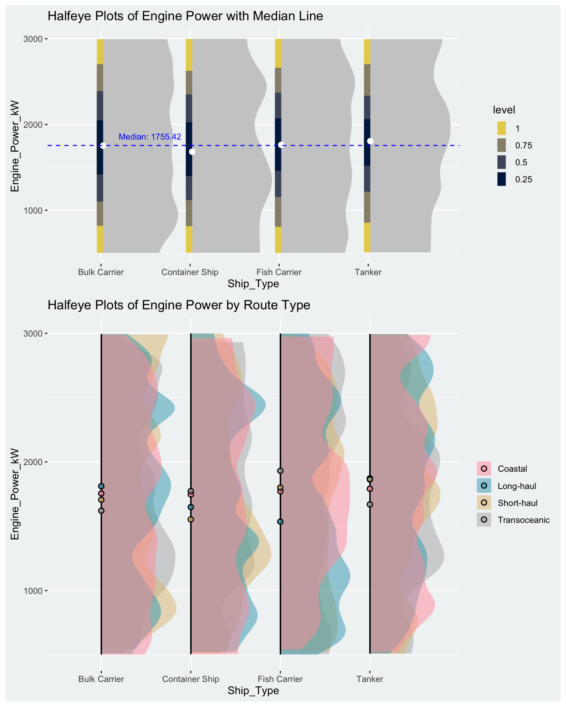
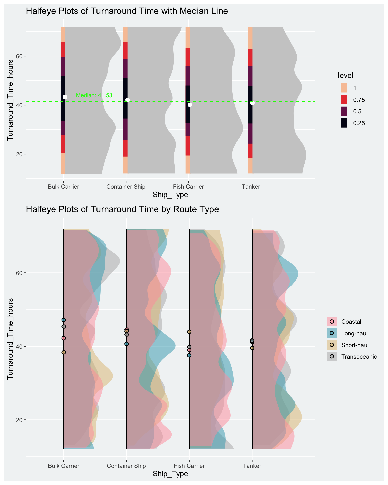
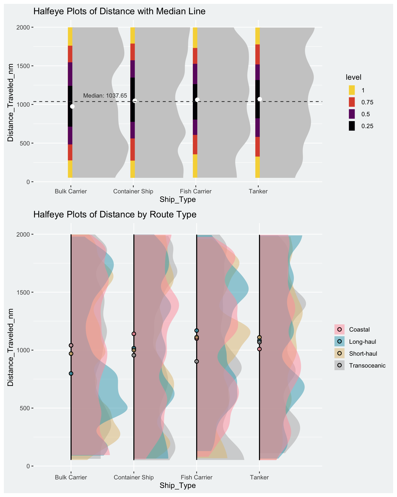
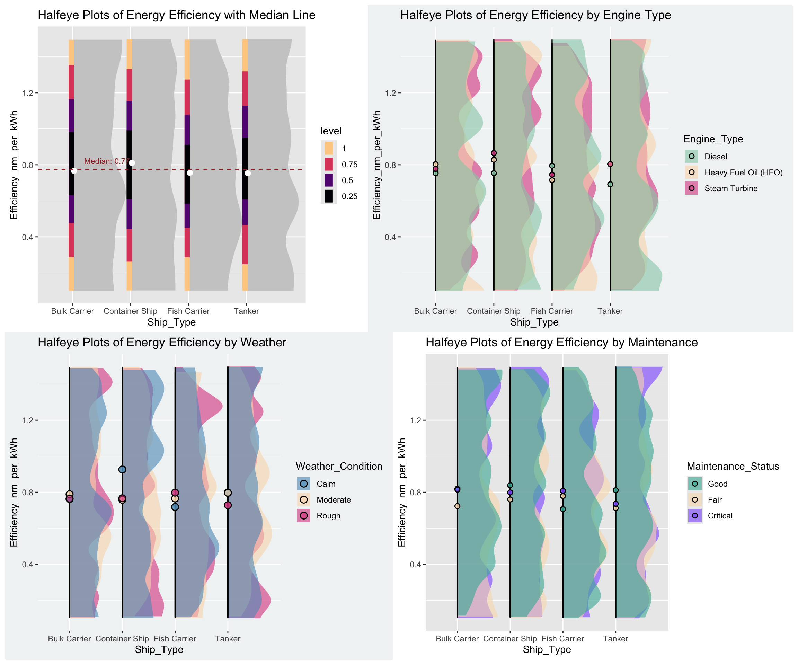
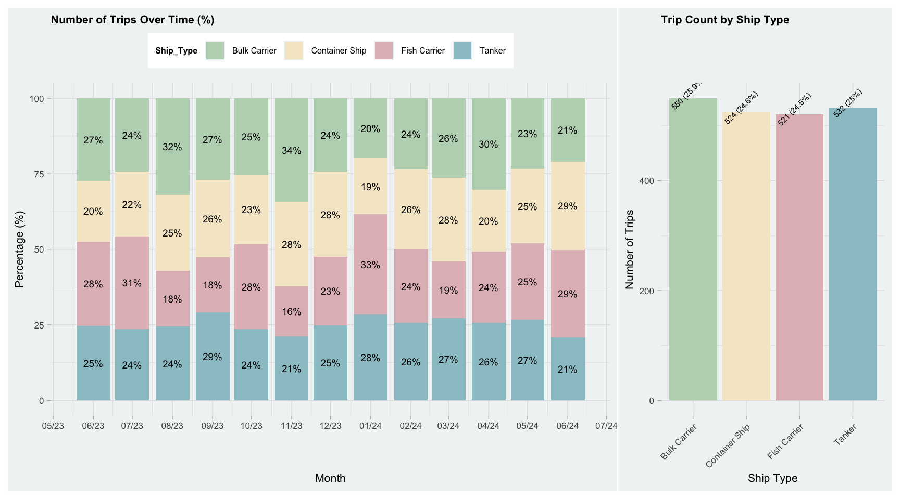
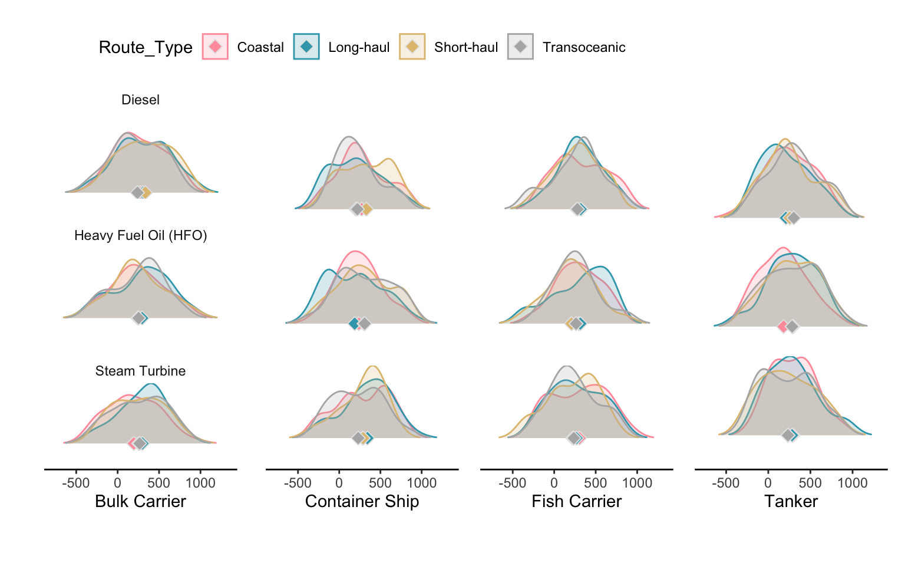
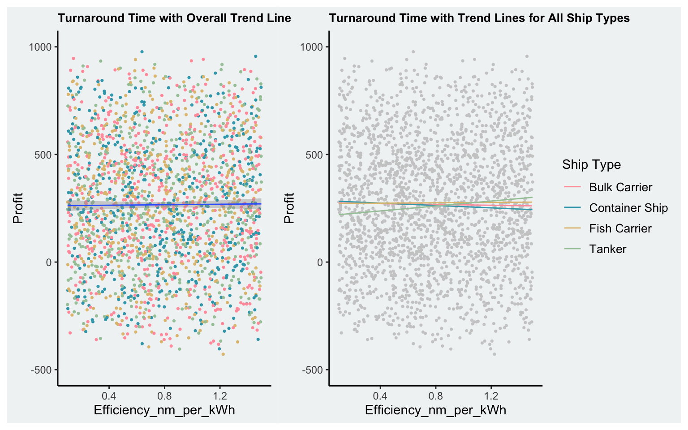
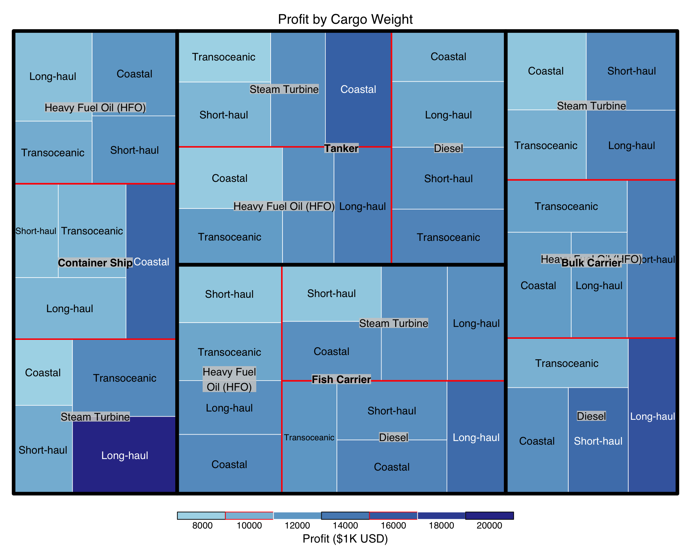

pacman::p_load(tidyverse, ggplot2, haven, knitr, patchwork, ggthemes, ggridges, gganimate,
ggdist, ggtext, colorspace, magrittr, patchwork, RColorBrewer,
ggstatsplot, egg, geomtextpath)Take-home Exercise 1
1 Overview
1.1 Abstract
[placeholder]
1.2 Task
An international media company that publishes weekly content on digital platforms is planning to release articles on “Ship Performance in the Gulf of Guinea”. As a graphical editor of the media company, I am going to prepare data visualisation for the article focusing on ship performance assessment.
This report will use Exploratory Data Analysis (EDA) methods and ggplot2 functions to visualise insights on:
- Ships’ energy efficiency
- Ships’ profitability
- Operational factors affecting voyage performance
2 Install and Load Packages
3 Data Preparation
The dataset Ship Performance Clustering Dataset downloaded from Kaggle. This file contains a detailed dataset focusing on the operational performance of various ship types across different routes. Each row represents the performance metrics and attributes for a specific voyage or ship over a given timeframe.
3.1 Import file and check
Import the csv file using read_csv().
data_ship <- read_csv("data/Ship_Pfm_Dataset.csv")class(data_ship)[1] "spec_tbl_df" "tbl_df" "tbl" "data.frame" Next I would like to observe the variables and their data type and understand the dataset.
The dataset consists of 18 columns and 2,736 rows (observations). Each observation contains an entry recording a voyage for which the ship’s profile and operational information. As the result of code shows, there are 5 categorical variables, 1 date variable and 12 numerical variables.
glimpse(data_ship)Rows: 2,736
Columns: 18
$ Date <date> 2023-06-04, 2023-06-11, 2023-06-18, 2023-06-2…
$ Ship_Type <chr> "Container Ship", "Fish Carrier", "Container S…
$ Route_Type <chr> "None", "Short-haul", "Long-haul", "Transocean…
$ Engine_Type <chr> "Heavy Fuel Oil (HFO)", "Steam Turbine", "Dies…
$ Maintenance_Status <chr> "Critical", "Good", "Fair", "Fair", "Fair", "F…
$ Speed_Over_Ground_knots <dbl> 12.59756, 10.38758, 20.74975, 21.05510, 13.742…
$ Engine_Power_kW <dbl> 2062.9840, 1796.0574, 1648.5567, 915.2618, 108…
$ Distance_Traveled_nm <dbl> 1030.9436, 1060.4864, 658.8741, 1126.8225, 144…
$ Draft_meters <dbl> 14.132284, 14.653083, 7.199261, 11.789063, 9.7…
$ Weather_Condition <chr> "Moderate", "Rough", "Moderate", "Moderate", "…
$ Cargo_Weight_tons <dbl> 1959.0179, 162.3947, 178.0409, 1737.3853, 260.…
$ Operational_Cost_USD <dbl> 483832.35, 483388.00, 448543.40, 261349.61, 28…
$ Revenue_per_Voyage_USD <dbl> 292183.27, 883765.79, 394018.75, 87551.38, 676…
$ Turnaround_Time_hours <dbl> 25.86708, 63.24820, 49.41815, 22.40911, 64.158…
$ Efficiency_nm_per_kWh <dbl> 1.4551789, 0.2903614, 0.4995945, 0.7029057, 1.…
$ Seasonal_Impact_Score <dbl> 1.4156533, 0.8856478, 1.4058132, 1.3707043, 0.…
$ Weekly_Voyage_Count <dbl> 1, 6, 9, 1, 8, 7, 3, 6, 8, 2, 9, 4, 3, 7, 7, 3…
$ Average_Load_Percentage <dbl> 93.76925, 93.89537, 96.21824, 66.19370, 80.008…3.2 Data Wrangling
The diagram below shows the variables selected for this study:
[placeholder]
3.2.1 Add a variable
To assess the ships’ performance in profit, I will add a variable Profit, to be derived from Revenue_per_Voyage_USD subtracing Operational_Cost_USD.
library(dplyr)
data_ship <- data_ship %>%
mutate(Profit = Revenue_per_Voyage_USD - Operational_Cost_USD)Now, I will use head() to have a look and confirm Profit is added to the data frame and the data type is numeric.
head(data_ship)# A tibble: 6 × 19
Date Ship_Type Route_Type Engine_Type Maintenance_Status
<date> <chr> <chr> <chr> <chr>
1 2023-06-04 Container Ship None Heavy Fuel Oil (HFO) Critical
2 2023-06-11 Fish Carrier Short-haul Steam Turbine Good
3 2023-06-18 Container Ship Long-haul Diesel Fair
4 2023-06-25 Bulk Carrier Transoceanic Steam Turbine Fair
5 2023-07-02 Fish Carrier Transoceanic Diesel Fair
6 2023-07-09 Fish Carrier Long-haul Heavy Fuel Oil (HFO) Fair
# ℹ 14 more variables: Speed_Over_Ground_knots <dbl>, Engine_Power_kW <dbl>,
# Distance_Traveled_nm <dbl>, Draft_meters <dbl>, Weather_Condition <chr>,
# Cargo_Weight_tons <dbl>, Operational_Cost_USD <dbl>,
# Revenue_per_Voyage_USD <dbl>, Turnaround_Time_hours <dbl>,
# Efficiency_nm_per_kWh <dbl>, Seasonal_Impact_Score <dbl>,
# Weekly_Voyage_Count <dbl>, Average_Load_Percentage <dbl>, Profit <dbl>3.2.2 Variable selection
To perform an analysis to achieve the objectives in 1.2, I will keep the following variables.
| Category | Variable | Recoded | Description | Type | Encoding |
|---|---|---|---|---|---|
| apple | Date | bbb | bbb | bbb | bbb |
| pear | Ship_Type | bbb | bbb | bbb | bbb |
| orange | Route_Type | bbb | bbb | bbb | bbb |
| orange | Engine_Type | bbb | bbb | bbb | bbb |
| orange | Maintenance_Status | bbb | bbb | bbb | bbb |
| orange | Speed_Over_Ground_knots | bbb | bbb | bbb | bbb |
| orange | Engine_Power_kW | bbb | bbb | bbb | bbb |
| orange | Distance_Traveled_nm | bbb | bbb | bbb | bbb |
| orange | Draft_meters | bbb | bbb | bbb | bbb |
| orange | Weather_Condition | bbb | bbb | bbb | bbb |
| orange | Cargo_Weight_tons | bbb | bbb | bbb | bbb |
| orange | Operational_Cost_USD | bbb | bbb | bbb | bbb |
| orange | Revenue_per_Voyage_USD | bbb | bbb | bbb | bbb |
| orange | Efficiency_nm_per_kWh | bbb | bbb | bbb | bbb |
| orange | Weekly_Voyage_Count | bbb | bbb | bbb | bbb |
| orange | Average_Load_Percentage | bbb | bbb | bbb | bbb |
| orange | Revenue_per_Voyage_USD | bbb | bbb | bbb | bbb |
| orange | Revenue_per_Voyage_USD | bbb | bbb | bbb | bbb |
| orange | Revenue_per_Voyage_USD | bbb | bbb | bbb | bbb |
The code below is used to select and reorder columns of wanted variables using select()
ship <- data_ship %>%
select(Date, Ship_Type, Route_Type, Engine_Type, Maintenance_Status, Speed_Over_Ground_knots,
Engine_Power_kW, Distance_Traveled_nm, Efficiency_nm_per_kWh,
Weather_Condition, Profit, Operational_Cost_USD,Revenue_per_Voyage_USD,
Average_Load_Percentage, Cargo_Weight_tons, Turnaround_Time_hours) Use glimese() to check and confirm the new data frame ship is created, and now has 14 columns.
glimpse(ship)Rows: 2,736
Columns: 16
$ Date <date> 2023-06-04, 2023-06-11, 2023-06-18, 2023-06-2…
$ Ship_Type <chr> "Container Ship", "Fish Carrier", "Container S…
$ Route_Type <chr> "None", "Short-haul", "Long-haul", "Transocean…
$ Engine_Type <chr> "Heavy Fuel Oil (HFO)", "Steam Turbine", "Dies…
$ Maintenance_Status <chr> "Critical", "Good", "Fair", "Fair", "Fair", "F…
$ Speed_Over_Ground_knots <dbl> 12.59756, 10.38758, 20.74975, 21.05510, 13.742…
$ Engine_Power_kW <dbl> 2062.9840, 1796.0574, 1648.5567, 915.2618, 108…
$ Distance_Traveled_nm <dbl> 1030.9436, 1060.4864, 658.8741, 1126.8225, 144…
$ Efficiency_nm_per_kWh <dbl> 1.4551789, 0.2903614, 0.4995945, 0.7029057, 1.…
$ Weather_Condition <chr> "Moderate", "Rough", "Moderate", "Moderate", "…
$ Profit <dbl> -191649.081, 400377.787, -54524.657, -173798.2…
$ Operational_Cost_USD <dbl> 483832.35, 483388.00, 448543.40, 261349.61, 28…
$ Revenue_per_Voyage_USD <dbl> 292183.27, 883765.79, 394018.75, 87551.38, 676…
$ Average_Load_Percentage <dbl> 93.76925, 93.89537, 96.21824, 66.19370, 80.008…
$ Cargo_Weight_tons <dbl> 1959.0179, 162.3947, 178.0409, 1737.3853, 260.…
$ Turnaround_Time_hours <dbl> 25.86708, 63.24820, 49.41815, 22.40911, 64.158…3.2.3 Missing values
Before I use the new data to perform analysis, I want to check if there are missing values to remove. If an entry has a missing value, it may affect the analysis result.
is.na() can be used to check this. Before I dive into each variable, I would like to have an overall check if there indeed are missing values. After this check, there is no missing value found.
which(is.na(ship))integer(0)sum(is.na(ship))[1] 0Next, I will use summary() to run a summary of the dataset to understand the overall statistics of the data.
summary(ship) Date Ship_Type Route_Type Engine_Type
Min. :2023-06-04 Length:2736 Length:2736 Length:2736
1st Qu.:2023-09-10 Class :character Class :character Class :character
Median :2023-12-17 Mode :character Mode :character Mode :character
Mean :2023-12-17
3rd Qu.:2024-03-24
Max. :2024-06-30
Maintenance_Status Speed_Over_Ground_knots Engine_Power_kW
Length:2736 Min. :10.01 Min. : 501
Class :character 1st Qu.:13.93 1st Qu.:1148
Mode :character Median :17.71 Median :1757
Mean :17.60 Mean :1758
3rd Qu.:21.28 3rd Qu.:2383
Max. :25.00 Max. :2999
Distance_Traveled_nm Efficiency_nm_per_kWh Weather_Condition
Min. : 50.43 Min. :0.1002 Length:2736
1st Qu.: 548.51 1st Qu.:0.4636 Class :character
Median :1037.82 Median :0.7899 Mode :character
Mean :1036.41 Mean :0.7987
3rd Qu.:1540.93 3rd Qu.:1.1474
Max. :1998.34 Max. :1.4993
Profit Operational_Cost_USD Revenue_per_Voyage_USD
Min. :-444584 Min. : 10092 Min. : 50352
1st Qu.: 40885 1st Qu.:131293 1st Qu.:290346
Median : 262716 Median :257158 Median :520177
Mean : 266219 Mean :255143 Mean :521362
3rd Qu.: 492216 3rd Qu.:381797 3rd Qu.:750073
Max. : 977168 Max. :499735 Max. :999917
Average_Load_Percentage Cargo_Weight_tons Turnaround_Time_hours
Min. : 50.01 Min. : 50.23 Min. :12.02
1st Qu.: 62.70 1st Qu.: 553.98 1st Qu.:26.17
Median : 75.50 Median :1043.21 Median :41.59
Mean : 75.22 Mean :1032.57 Mean :41.75
3rd Qu.: 87.72 3rd Qu.:1527.72 3rd Qu.:57.36
Max. :100.00 Max. :1999.13 Max. :71.97 As shown above, it is observed that for Ship_Type, Route_Type, Engine_Type, and Weather_Condition, there are “None” string that I will not be able to incorporate into my analysis. Therefore, I will remove entries containing “None” using the code below. As a result, a tibble frame of 2,234 entries is derived.
library(dplyr)
#check row numbers before filter
nrow(ship)[1] 2736ship_filter <- ship %>%
filter(!if_any(c(Ship_Type, Route_Type, Engine_Type, Weather_Condition, Maintenance_Status), ~ .x == "None"))
#check row numbers after filter
nrow(ship_filter) [1] 2127Let’s run a summary of this dataset again.
summary(ship_filter) Date Ship_Type Route_Type Engine_Type
Min. :2023-06-04 Length:2127 Length:2127 Length:2127
1st Qu.:2023-09-10 Class :character Class :character Class :character
Median :2023-12-17 Mode :character Mode :character Mode :character
Mean :2023-12-18
3rd Qu.:2024-03-27
Max. :2024-06-30
Maintenance_Status Speed_Over_Ground_knots Engine_Power_kW
Length:2127 Min. :10.01 Min. : 501.7
Class :character 1st Qu.:13.90 1st Qu.:1140.3
Mode :character Median :17.71 Median :1755.4
Mean :17.61 Mean :1750.9
3rd Qu.:21.32 3rd Qu.:2365.0
Max. :24.99 Max. :2998.7
Distance_Traveled_nm Efficiency_nm_per_kWh Weather_Condition
Min. : 50.43 Min. :0.1002 Length:2127
1st Qu.: 559.50 1st Qu.:0.4553 Class :character
Median :1037.65 Median :0.7750 Mode :character
Mean :1038.98 Mean :0.7899
3rd Qu.:1541.19 3rd Qu.:1.1363
Max. :1998.34 Max. :1.4982
Profit Operational_Cost_USD Revenue_per_Voyage_USD
Min. :-428282 Min. : 10097 Min. : 50352
1st Qu.: 47543 1st Qu.:133864 1st Qu.:292184
Median : 259071 Median :259125 Median :524083
Mean : 266385 Mean :257042 Mean :523428
3rd Qu.: 492047 3rd Qu.:384452 3rd Qu.:752934
Max. : 977168 Max. :499735 Max. :999812
Average_Load_Percentage Cargo_Weight_tons Turnaround_Time_hours
Min. :50.01 Min. : 50.23 Min. :12.02
1st Qu.:62.51 1st Qu.: 557.07 1st Qu.:26.31
Median :75.16 Median :1045.37 Median :41.53
Mean :75.13 Mean :1033.47 Mean :41.77
3rd Qu.:87.69 3rd Qu.:1526.15 3rd Qu.:57.56
Max. :99.95 Max. :1999.13 Max. :71.97 3.2.4 Convert data type
From 4.1, I observed that Maintenance_Status, Weather_Condition, Ship_Type, Route_Type, Engine_Type are all character data type. In fact, Maintenance_Status, Weather_Condition can be converted to ordinal data type, and Ship_Type, Route_Type, Engine_Type to factor data type to derive better result.
Use the code below to perform data type conversion:
col_f <- c("Ship_Type", "Route_Type", "Engine_Type", "Weather_Condition")
#Column names should be in quotation marks (" ")
ship_filter <- ship_filter %>%
mutate(across(col_f, as.factor)) %>%
mutate(Maintenance_Status = factor(Maintenance_Status,
levels = c("Good", "Fair", "Critical"),
ordered = TRUE)) I also want to convert the uni for the monetary values into thousand dollars as the unit for Operational_Cost_USD, Revenue_per_Voyage_USD and Profit.
ship_filter <- ship_filter %>%
mutate(Operational_Cost_USD = round(Operational_Cost_USD / 1000, 0), #convert to thousand dollars, leaving on decimal places.
Revenue_per_Voyage_USD = round(Revenue_per_Voyage_USD / 1000, 0),
Profit = round(Profit / 1000, 0))I use kable() to check the conversion result, and confirm the desired variables have been converted accordingly.
kable(head(ship_filter, n=8), caption = "Ship Performance Dataset")| Date | Ship_Type | Route_Type | Engine_Type | Maintenance_Status | Speed_Over_Ground_knots | Engine_Power_kW | Distance_Traveled_nm | Efficiency_nm_per_kWh | Weather_Condition | Profit | Operational_Cost_USD | Revenue_per_Voyage_USD | Average_Load_Percentage | Cargo_Weight_tons | Turnaround_Time_hours |
|---|---|---|---|---|---|---|---|---|---|---|---|---|---|---|---|
| 2023-06-11 | Fish Carrier | Short-haul | Steam Turbine | Good | 10.38758 | 1796.0574 | 1060.4864 | 0.2903614 | Rough | 400 | 483 | 884 | 93.89537 | 162.3947 | 63.24820 |
| 2023-06-18 | Container Ship | Long-haul | Diesel | Fair | 20.74975 | 1648.5567 | 658.8741 | 0.4995945 | Moderate | -55 | 449 | 394 | 96.21824 | 178.0409 | 49.41815 |
| 2023-06-25 | Bulk Carrier | Transoceanic | Steam Turbine | Fair | 21.05510 | 915.2618 | 1126.8225 | 0.7029057 | Moderate | -174 | 261 | 88 | 66.19370 | 1737.3853 | 22.40911 |
| 2023-07-02 | Fish Carrier | Transoceanic | Diesel | Fair | 13.74278 | 1089.7218 | 1445.2812 | 1.3313431 | Moderate | 388 | 288 | 676 | 80.00858 | 260.5951 | 64.15823 |
| 2023-07-09 | Fish Carrier | Long-haul | Heavy Fuel Oil (HFO) | Fair | 18.61620 | 2171.6466 | 723.3042 | 1.3702060 | Rough | 592 | 185 | 777 | 53.17490 | 1912.5098 | 47.47615 |
| 2023-07-16 | Fish Carrier | Transoceanic | Heavy Fuel Oil (HFO) | Critical | 20.43312 | 2505.0435 | 270.1186 | 1.1203894 | Rough | 305 | 434 | 739 | 58.50864 | 1191.4364 | 29.04042 |
| 2023-07-23 | Container Ship | Short-haul | Diesel | Critical | 23.49805 | 814.8065 | 1717.3284 | 0.6959746 | Moderate | 114 | 348 | 462 | 94.59197 | 318.4493 | 52.47860 |
| 2023-08-06 | Container Ship | Long-haul | Diesel | Fair | 23.22710 | 2685.4017 | 1588.7923 | 0.4406762 | Calm | 465 | 150 | 615 | 79.45133 | 1843.4383 | 63.74276 |
4 Voyage Pprofile
4.1 Ship conditions & routes
Show the code
# Code bar chart for Ship type
p_st <- ggplot(data = ship_filter,
aes(x = Ship_Type)) +
geom_bar(fill = "grey") +
ylim(0, 1000) +
geom_text(stat="count",
aes(label = paste0(after_stat(count),", ",
round(after_stat(count)/sum(after_stat(count))*100, 0), "%")),
vjust = -0.5,
size = 6) +
labs(x = "",
y = "",
title = "Ship types") +
theme_classic() +
theme(plot.background = element_rect(fill = "#f1f4f5"),
panel.background = element_rect(fill = "#f1f4f5"),
panel.border = element_blank(),
plot.title = element_text(size = 20, face = "bold"),
text = element_text(size = 20))
# Code bar chart for Engine type
p_et <- ggplot(data = ship_filter,
aes(x = Engine_Type)) +
geom_bar(fill = "grey") +
ylim(0, 1000) +
geom_text(stat="count",
aes(label = paste0(after_stat(count),", ",
round(after_stat(count)/sum(after_stat(count))*100, 0), "%")),
vjust = -0.5,
size = 6) +
labs(x = "",
y = "",
title = "Engine types") +
theme_classic() +
theme(plot.background = element_rect(fill = "#f1f4f5"),
panel.background = element_rect(fill = "#f1f4f5"),
panel.border = element_blank(),
plot.title = element_text(size = 20, face = "bold"),
text = element_text(size = 20))
# Code bar chart for Route type
p_rt <- ggplot(data = ship_filter,
aes(x = Route_Type)) +
geom_bar(fill = "grey") +
ylim(0, 1000) +
geom_text(stat="count",
aes(label = paste0(after_stat(count),", ",
round(after_stat(count)/sum(after_stat(count))*100, 0), "%")),
vjust = -0.5,
size = 6) +
labs(x = "",
y = "",
title = "Route types") +
theme_classic() +
theme(plot.background = element_rect(fill = "#f1f4f5"),
panel.background = element_rect(fill = "#f1f4f5"),
panel.border = element_blank(),
plot.title = element_text(size = 20, face = "bold"),
text = element_text(size = 20))
#Code bar chart for Maintenance status
p_ms <- ggplot(data = ship_filter,
aes(x = Maintenance_Status)) +
geom_bar(fill = "grey80") +
ylim(0, 1000) +
geom_text(stat="count",
aes(label = paste0(after_stat(count),", ",
round(after_stat(count)/sum(after_stat(count))*100, 0), "%")),
vjust = -0.5,
size = 6) +
labs(x = "",
y = "",
title = "Maintenance status") +
theme_classic() +
theme(plot.background = element_rect(fill = "#f1f4f5"),
panel.background = element_rect(fill = "#f1f4f5"),
panel.border = element_blank(),
plot.title = element_text(size = 20, face = "bold"),
text = element_text(size = 20))
#Combine all charts
patchwork <- (p_st | p_et) / (p_rt | p_ms)
patchwork
4.2 Weather conditions
Show the code
#Plot1
p_wthr_1 <- ggplot(data = ship_filter,
aes(x = Weather_Condition, fill = Weather_Condition)) +
geom_bar() +
ylim(0, 1000) +
geom_text(stat="count",
aes(label = paste0(after_stat(count),", ",
round(after_stat(count)/sum(after_stat(count))*100, 0), "%")),
vjust = -0.5,
size = 2) +
scale_fill_manual(values = c("Calm" = "#86A788",
"Moderate" = "#FFFDEC",
"Rough" = "#FFE2E2")) +
labs(x = "",
y = "",
title = "Weather Condition \n Overview") +
theme_light() +
theme(plot.background = element_rect(fill = "#f1f4f5"),
panel.background = element_rect(fill = "#f1f4f5"),
panel.border = element_blank(),
plot.title = element_text(size = 10, face = "bold"),
text = element_text(size = 8),
# legend.text = element_text(size = 6), # Change legend text size
# legend.title = element_text(size = 6, face = "bold"), # Change legend title size
# legend.key.size = unit(0.5, "cm"), # Adjust legend key size (box size)
# legend.spacing.y = unit(0.3, "cm"),
legend.position = "none") # Adjust vertical spacing between legend items))
# Plot2
# Extract month and year from the Date
ship_filter_month <- ship_filter %>%
mutate(Month = floor_date(Date, "month"))
# Group by Month and Weather type, then count occurrences
weather_by_month_bar <- ship_filter_month %>%
group_by(Month, Weather_Condition) %>%
summarise(Count = n(), .groups = "drop")
# Calculate total occurrences per month
total_per_month_bar <- weather_by_month_bar %>%
group_by(Month) %>%
summarise(Total = sum(Count))
# Join total occurrences per month and compute percentage
weather_percentage_bar <- weather_by_month_bar %>%
left_join(total_per_month_bar, by = "Month") %>%
mutate(Percentage = (Count / Total) * 100) # Convert to percentage
# Plot stacked bar chart with percentage
p_wthr_2 <- ggplot(weather_percentage_bar,
aes(x = Month, y = Percentage, fill = factor(Weather_Condition, levels = c("Calm", "Moderate", "Rough")))) +
geom_bar(stat = "identity", position = "stack") + # Use identity because we computed percentages
geom_text(aes(label = paste0(round(Percentage, 0), "%")),
position = position_stack(vjust = 0.5), # Center the text in each segment
size = 2.5, color = "black") + # Adjust text size and color
scale_fill_manual(values = c("Calm" = "#86A788",
"Moderate" = "#FFFDEC",
"Rough" = "#FFE2E2")) + # Choose a colour palette
labs(title = "Weather Distribution by Month (%)",
x = "Month",
y = "Percentage (%)",
fill = "Weather") +
theme_light() +
scale_x_date(labels = scales::date_format("%m/%y"), breaks = "1 month") +
theme(plot.title = element_text(size = 10, face = "bold"),
plot.background = element_rect(fill = "#f1f4f5"),
panel.background = element_rect(fill = "#f1f4f5"),
panel.border = element_blank(),
text = element_text(size = 8),
legend.text = element_text(size = 6), # Change legend text size
legend.title = element_text(size = 6, face = "bold"), # Change legend title size
legend.key.size = unit(0.5, "cm"), # Adjust legend key size (box size)
legend.spacing.y = unit(0.3, "cm"),
legend.position = "top") # Adjust vertical spacing between legend items))) #hide legend
#Combine plots
p_wthr_2 + p_wthr_1 + plot_layout(widths = c(2.5,1))
4.3 Operational effects
Show the code
#Plot1
p_heye_al <- ggplot(ship_filter,
aes(x = Ship_Type,
y = Average_Load_Percentage,
fill = Route_Type)) +
ggdist::stat_halfeye(.width=c(0,1), adjust = .5,
shape = 21,
point_size = 2) +
scale_fill_manual(values = c("Coastal" = adjustcolor("#A1E3F9", alpha.f = 0.6),
"Long-haul" = adjustcolor("#EFAC00", alpha.f = 0.6),
"Short-haul" = adjustcolor("#9C55E3", alpha.f = 0.6),
"Transoceanic" = adjustcolor("#FFA09B", alpha.f = 0.6),
name = NULL)) +
labs(title = "Halfeye Plots by Route Type")
#Plot2
median_load = median(ship_filter$Average_Load_Percentage)
p_heye_al_st <- ggplot(ship_filter,
aes(x = Ship_Type,
y = Average_Load_Percentage)) +
ggdist::stat_interval(.width = 1:4*.25) +
ggdist::stat_halfeye(.width = 0, fill = "grey80", color = "white", position = position_nudge(x = .024)) +
scale_color_viridis_d(option = "mako", direction = -1, end = .9) +
geom_hline(yintercept = median_load, linetype = "dashed", color = "purple") + # Add median line
annotate("text", x = 1.2, y = median_load, label = paste("Median:", round(median_load, 2)),
color = "purple", vjust = -1, hjust = 0, size = 3) + # Add text label
labs(title = "Halfeye Plots with Median Line")
#Combine plots
p_heye_al_st / p_heye_al + plot_layout(height = c(1, 1.5))
Show the code
#Plot1
p_heye_ep <- ggplot(ship_filter,
aes(x = Ship_Type,
y = Engine_Power_kW,
fill = Route_Type)) +
ggdist::stat_halfeye(.width=c(0,1), adjust = .5,
shape = 21,
point_size = 2) +
scale_fill_manual(values = c("Coastal" = adjustcolor("#A1E3F9", alpha.f = 0.6),
"Long-haul" = adjustcolor("#EFAC00", alpha.f = 0.6),
"Short-haul" = adjustcolor("#9C55E3", alpha.f = 0.6),
"Transoceanic" = adjustcolor("#FFA09B", alpha.f = 0.6),
name = NULL)) +
labs(title = "Halfeye Plots of Engine Power by Route Type")
#Plot2
median_load = median(ship_filter$Engine_Power_kW)
p_heye_ep_st <- ggplot(ship_filter,
aes(x = Ship_Type,
y = Engine_Power_kW)) +
ggdist::stat_interval(.width = 1:4*.25) +
ggdist::stat_halfeye(.width = 0, fill = "grey80", color = "white", position = position_nudge(x = .024)) +
scale_color_viridis_d(option = "cividis", direction = -1, end = .9) +
geom_hline(yintercept = median_load, linetype = "dashed", color = "blue") + # Add median line
annotate("text", x = 1.2, y = median_load, label = paste("Median:", round(median_load, 2)),
color = "blue", vjust = -1, hjust = 0, size = 3) + # Add text label
labs(title = "Halfeye Plots of Engine Power with Median Line")
#Combine plots
p_heye_ep_st / p_heye_ep + plot_layout(height = c(1, 1.5))
Show the code
#Plot1
p_heye_cw <- ggplot(ship_filter,
aes(x = Ship_Type,
y = Cargo_Weight_tons,
fill = Route_Type)) +
ggdist::stat_halfeye(.width=c(0,1), adjust = .5,
shape = 21,
point_size = 2) +
scale_fill_manual(values = c("Coastal" = adjustcolor("#A1E3F9", alpha.f = 0.6),
"Long-haul" = adjustcolor("#EFAC00", alpha.f = 0.6),
"Short-haul" = adjustcolor("#9C55E3", alpha.f = 0.6),
"Transoceanic" = adjustcolor("#FFA09B", alpha.f = 0.6),
name = NULL)) +
labs(title = "Halfeye Plots of Cargo Weight by Route Type")
#Plot2
median_load = median(ship_filter$Cargo_Weight_tons)
p_heye_cw_st <- ggplot(ship_filter,
aes(x = Ship_Type,
y = Cargo_Weight_tons)) +
ggdist::stat_interval(.width = 1:4*.25) +
ggdist::stat_halfeye(.width = 0, fill = "grey80", color = "white", position = position_nudge(x = .024)) +
scale_color_viridis_d(option = "plasma", direction = -1, end = .9) +
geom_hline(yintercept = median_load, linetype = "dashed", color = "red") + # Add median line
annotate("text", x = 1.2, y = median_load, label = paste("Median:", round(median_load, 2)),
color = "red", vjust = -1, hjust = 0, size = 3) + # Add text label
labs(title = "Halfeye Plots of Cargo Weight with Median Line")
#Combine plots
p_heye_cw_st / p_heye_cw + plot_layout(height = c(1, 1.5))
Show the code
#Plot1
p_heye_tt <- ggplot(ship_filter,
aes(x = Ship_Type,
y = Turnaround_Time_hours,
fill = Route_Type)) +
ggdist::stat_halfeye(.width=c(0,1), adjust = .5,
shape = 21,
point_size = 2) +
scale_fill_manual(values = c("Coastal" = adjustcolor("#A1E3F9", alpha.f = 0.6),
"Long-haul" = adjustcolor("#EFAC00", alpha.f = 0.6),
"Short-haul" = adjustcolor("#9C55E3", alpha.f = 0.6),
"Transoceanic" = adjustcolor("#FFA09B", alpha.f = 0.6),
name = NULL)) +
labs(title = "Halfeye Plots of Turnaround Time by Route Type")
#Plot2
median_load = median(ship_filter$Turnaround_Time_hours)
p_heye_tt_st <- ggplot(ship_filter,
aes(x = Ship_Type,
y = Turnaround_Time_hours)) +
ggdist::stat_interval(.width = 1:4*.25) +
ggdist::stat_halfeye(.width = 0, fill = "grey80", color = "white", position = position_nudge(x = .024)) +
scale_color_viridis_d(option = "rocket", direction = -1, end = .9) +
geom_hline(yintercept = median_load, linetype = "dashed", color = "green") + # Add median line
annotate("text", x = 1.2, y = median_load, label = paste("Median:", round(median_load, 2)),
color = "green", vjust = -1, hjust = 0, size = 3) + # Add text label
labs(title = "Halfeye Plots of Turnaround Time with Median Line")
#Combine plots
p_heye_tt_st / p_heye_tt + plot_layout(height = c(1, 1.5))
Show the code
#Plot1
p_heye_dt <- ggplot(ship_filter,
aes(x = Ship_Type,
y = Distance_Traveled_nm,
fill = Route_Type)) +
ggdist::stat_halfeye(.width=c(0,1), adjust = .5,
shape = 21,
point_size = 2) +
scale_fill_manual(values = c("Coastal" = adjustcolor("#A1E3F9", alpha.f = 0.6),
"Long-haul" = adjustcolor("#EFAC00", alpha.f = 0.6),
"Short-haul" = adjustcolor("#9C55E3", alpha.f = 0.6),
"Transoceanic" = adjustcolor("#FFA09B", alpha.f = 0.6),
name = NULL)) +
labs(title = "Halfeye Plots of Distance by Route Type")
#Plot2
median_load = median(ship_filter$Distance_Traveled_nm)
p_heye_dt_st <- ggplot(ship_filter,
aes(x = Ship_Type,
y = Distance_Traveled_nm)) +
ggdist::stat_interval(.width = 1:4*.25) +
ggdist::stat_halfeye(.width = 0, fill = "grey80", color = "white", position = position_nudge(x = .024)) +
scale_color_viridis_d(option = "inferno", direction = -1, end = .9) +
geom_hline(yintercept = median_load, linetype = "dashed", color = "grey20") + # Add median line
annotate("text", x = 1.2, y = median_load, label = paste("Median:", round(median_load, 2)),
color = "grey20", vjust = -1, hjust = 0, size = 3) + # Add text label
labs(title = "Halfeye Plots of Distance with Median Line")
#Combine plots
p_heye_dt_st / p_heye_dt + plot_layout(height = c(1, 1.5))
Show the code
# Plot1
p_heye_ee_et <- ggplot(ship_filter,
aes(x = Ship_Type,
y = Efficiency_nm_per_kWh,
fill = Engine_Type)) +
ggdist::stat_halfeye(.width=c(0,1), adjust = .5,
shape = 21,
point_size = 2) +
scale_fill_manual(values = c("Heavy Fuel Oil (HFO)" = adjustcolor("#F9DBBA", alpha.f = 0.8),
"Steam Turbine" = adjustcolor("#DA498D", alpha.f = 0.6),
"Diesel" = adjustcolor("#96CEB4", alpha.f = 0.6),
name = NULL)) +
labs(title = "Halfeye Plots of Energy Efficiency by Engine Type")
# Plot2
median_load = median(ship_filter$Efficiency_nm_per_kWh)
p_heye_ee <- ggplot(ship_filter,
aes(x = Ship_Type,
y = Efficiency_nm_per_kWh)) +
ggdist::stat_interval(.width = 1:4*.25) +
ggdist::stat_halfeye(.width = 0, fill = "grey80", color = "white", position = position_nudge(x = .024)) +
scale_color_viridis_d(option = "magma", direction = -1, end = .9) +
geom_hline(yintercept = median_load, linetype = "dashed", color = "brown") + # Add median line
annotate("text", x = 1.2, y = median_load, label = paste("Median:", round(median_load, 2)),
color = "brown", vjust = -1, hjust = 0, size = 3) + # Add text label
labs(title = "Halfeye Plots of Energy Efficiency with Median Line")
# Plot3
p_heye_ee_wc <- ggplot(ship_filter,
aes(x = Ship_Type,
y = Efficiency_nm_per_kWh,
fill = Weather_Condition)) +
ggdist::stat_halfeye(.width=c(0,1), adjust = .5,
shape = 21,
point_size = 3) +
scale_fill_manual(values = c("Moderate" = adjustcolor("#F9DBBA", alpha.f = 0.8),
"Rough" = adjustcolor("#DA498D", alpha.f = 0.6),
"Calm" = adjustcolor("#5B99C2", alpha.f = 0.8),
name = NULL)) +
labs(title = "Halfeye Plots of Energy Efficiency by Weather")
# Plot4
p_heye_ee_ms <- ggplot(ship_filter,
aes(x = Ship_Type,
y = Efficiency_nm_per_kWh,
fill = Maintenance_Status)) +
ggdist::stat_halfeye(.width=c(0,1), adjust = .5,
shape = 21,
point_size = 2) +
scale_fill_manual(values = c("Fair" = adjustcolor("#F9DBBA", alpha.f = 0.8),
"Critical" = adjustcolor("#8B5DFF", alpha.f = 0.6),
"Good" = adjustcolor("#41B3A2", alpha.f = 0.6),
name = NULL)) +
labs(title = "Halfeye Plots of Energy Efficiency by Maintenance")
# Combine plots
(p_heye_ee | p_heye_ee_et) / (p_heye_ee_wc | p_heye_ee_ms)
5 Profit Performance
5.1 Finance performance overview
To have an overview of the finance performance from all ship types, I use boxplot to check the operational cost, revenue per trip and the profit in thousand dollars. There are no outliers observed. The operational cost does not expand beyond $500K
Show the code
#Plot operational cost distribution
p1 <- ggplot(ship_filter,
aes(y = Operational_Cost_USD, x = "All ship types")) +
geom_violin(outlier.colour = "purple",
color = "#A3B23B",
fill = "#F4F8D3",
alpha = 0.4) +
geom_boxplot(width = .2,
color = "grey60") +
geom_point(position = "jitter",
size = 0.01,
color = "#F4F8D3",
alpha = 0.3) +
coord_cartesian(ylim = c(-500, 1000)) +
theme_light()
#Plot revenue distribution
p2<- ggplot(ship_filter,
aes(y = Revenue_per_Voyage_USD, x = "All ship types")) +
geom_violin(outlier.colour = "blue",
color = "#5FB0B0",
fill = "#73C7C7",
alpha = 0.4) +
geom_boxplot(width = .2,
color = "grey60") +
geom_point(position = "jitter",
size = 0.05,
color = "#73C7C7",
alpha = 0.3) +
coord_cartesian(ylim = c(-500, 1000)) +
theme_light()
#Plot profit distribution
p3 <- ggplot(ship_filter,
aes(y = Profit, x = "All ship types")) +
geom_violin(outlier.colour = "green",
color = "#E6A5B1",
fill = "#F7CFD8",
alpha = 0.4) +
geom_boxplot(width = .2,
color = "grey60") +
geom_point(position = "jitter",
size = 0.05,
color = "#F7CFD8",
alpha = 0.3) +
coord_cartesian(ylim = c(-500, 1000)) +
theme_light()
patchwork <- p1 + p2 + p3
patchwork + plot_annotation(
title = "Finance Distribution Overview",
theme = theme(plot.title = element_text(size = 12, face = "bold")
))
Show the code
# plot_annotation(title = "Operational Cost by Ship Type")Next, we use scatterplot to see if Revenue_per_Voyage_USD and Operational_Cost_USD have any relations.
Show the code
p4 <- ggplot(data=ship_filter,
aes(x = Revenue_per_Voyage_USD,
y = Operational_Cost_USD)) +
geom_point(colour = "grey",
size = 0.6) +
geom_smooth(method = lm,
size = 0.5) +
coord_cartesian(xlim=c(0,1000),
ylim=c(0,600)) +
labs(title = "Cost vs Revenue for All Ship Types") +
theme_economist_white() +
theme(plot.title = element_text(size = 10, face = "bold"))Below I combined the 3 plots together to have a clearer view of the relations.
Show the code
patchwork <- p4 | (p1 / p2)
patchwork & theme_economist_white() +
theme(axis.title = element_text(size = rel(1)),
axis.text = element_text(size = 8),
plot.title = element_text(size = 12))
Now I want to see the Profit performance by different factors, including ship conditions and external factors, namely, Ship type, Engine type, Weather condition, Route type and Maintenance status.
5.1.1 Ship type
Figure below is plotted by mapping the probabilities calculated by using stat(ecdf) which represent the empirical cumulative density function for the distribution of English score.
[placeholder - insights] p = 0.84 suggests none of the differences are statistically significant, meaning that Tanker is not earning significantly different profit from other ship types, although we can see slight difference.
Show the code
# Plot1
# Plot statboxplot by ship types
p_statbox_st <- ggbetweenstats(
data = ship_filter,
x = Ship_Type,
y = Profit,
type = "p",
mean.ci = TRUE,
pariwise.comparisons = TRUE,
pairwise.display = "s",
p.adjust.methods = "fdr",
message = FALSE
)
# Plot 2
p_dens_st <- ggplot(ship_filter,
aes(x = Profit,
y = Ship_Type)) +
geom_density_ridges_gradient(
scale = 3,
rel_min_height = 0.01,
calc_ecdf = TRUE, # Ensures ECDF is calculated for fill
aes(fill = 0.5 - abs(0.5 - after_stat(ecdf)))) + # Use ECDF for fill
scale_fill_gradientn(colors = c("#F3F7EC", "#006989")) + # Custom colors
scale_x_continuous(name = "Profit",
expand = c(0, 0)) +
labs(title = "Profit Distribution and Central Tendency") +
theme_light() +
theme(legend.title = element_blank())
# Plot 3
p_rid_st <- ggplot(ship_filter,
aes(x = Profit,
y = Ship_Type,
fill = factor(stat(quantile)))) +
stat_density_ridges(
geom = "density_ridges_gradient",
calc_ecdf = TRUE,
quantiles = c(0.025, 0.975)
) +
scale_fill_manual(
name = "Probability",
values = alpha(c("#E6A5B1", "#F8F4EC", "#5FB0B0"), 0.5),
labels = c("(0, 0.025]", "(0.025, 0.975]", "(0.975, 1]")) +
labs(title = ("Probability of Profit Distribution by Ship Type")) +
theme_light()
p_statbox_st / (p_dens_st | p_rid_st)
5.1.2 Engine type
Show the code
# Plot1
# Plot statboxplot by ship types
p_statbox_st <- ggbetweenstats(
data = ship_filter,
x = Engine_Type,
y = Profit,
type = "p",
mean.ci = TRUE,
pariwise.comparisons = TRUE,
pairwise.display = "s",
p.adjust.methods = "fdr",
message = FALSE
)
# Plot 2
p_dens_st <- ggplot(ship_filter,
aes(x = Profit,
y = Engine_Type)) +
geom_density_ridges_gradient(
scale = 3,
rel_min_height = 0.01,
calc_ecdf = TRUE, # Ensures ECDF is calculated for fill
aes(fill = 0.5 - abs(0.5 - after_stat(ecdf)))) + # Use ECDF for fill
scale_fill_gradientn(colors = c("#F3F7EC", "#006989")) + # Custom colors
scale_x_continuous(name = "Profit",
expand = c(0, 0)) +
labs(title = "Profit Distribution and Central Tendency") +
theme_light() +
theme(legend.title = element_blank())
# Plot 3
p_rid_st <- ggplot(ship_filter,
aes(x = Profit,
y = Engine_Type,
fill = factor(stat(quantile)))) +
stat_density_ridges(
geom = "density_ridges_gradient",
calc_ecdf = TRUE,
quantiles = c(0.025, 0.975)
) +
scale_fill_manual(
name = "Probability",
values = alpha(c("#E6A5B1", "#F8F4EC", "#5FB0B0"), 0.5),
labels = c("(0, 0.025]", "(0.025, 0.975]", "(0.975, 1]")) +
labs(title = ("Probability of Profit Distribution by Ship Type")) +
theme_light()
p_statbox_st / (p_dens_st | p_rid_st)
5.1.3 Weather condition
5.1.4 Route type
5.1.5 maintenance status
5.2 Ship type performance by different factors
5.2.1 Engine type
[placeholder - explain how to plot]
In this section, I will explore some variables by Ship types before going deeper into comparison studies to assess ships performance in different aspects.
From the raincloud plot, can see Tanker stands out as its median looks more different than the rest. Plot statboxplot to check on the significance.
Show the code
# Plot1
# Plot statboxplot by ship types
p_statbox_st <- ggbetweenstats(
data = ship_filter,
x = Ship_Type,
y = Profit,
type = "p",
mean.ci = TRUE,
pariwise.comparisons = TRUE,
pairwise.display = "s",
p.adjust.methods = "fdr",
message = FALSE
) +
coord_flip()
#Plot raincloud plot by ship types
median_Profit <- median(ship_filter$Profit)
mean_Profit <- round(mean(ship_filter$Profit), 2)
p_rcloud_st <- ggplot(ship_filter,
aes(x = Ship_Type,
y = Profit,
fill = Ship_Type)) +
stat_halfeye(adjust = 0.3,
justification = -0.2,
scale = 0.6,
width = 0.6,
slab_color = "grey",
slab_fill = "#D6DED5",
slab_linetype = "solid",
slab_linewidth = 0.4,
slab_alpha = 0.5,
.width = 0,
point_colour = NA,
position = position_nudge(y = -0.2)) +
geom_boxplot(width = 0.1,
color = "#FFC0CB",
position = position_nudge(y = 0.8)) +
scale_fill_brewer(palette="Pasterl1") +
stat_dots(side = "left",
justification = 1.2,
bandwidth = .5,
dotsize = 0.1,
alpha = 0.4,
aes(color = Engine_Type)) +
#indicate median score position
geom_hline(aes(yintercept = median_Profit),
color = "blue",
linewidth = 0.4,
linetype = "dashed") +
#indicate mean score position
geom_hline(aes(yintercept = mean_Profit),
color = "red",
linewidth = 0.4,
linetype = "dashed") +
theme_minimal() +
annotate("text",
x = 0.1,
y = median_Profit + 270,
label = paste("Median Score = ", median_Profit),
color = "blue",
size = 3) +
annotate("text",
x = 0.3,
y = mean_Profit + 270,
label = paste("Mean Score = ", mean_Profit),
color = "red",
size = 3) +
coord_flip() +
theme_light() +
theme(plot.background = element_rect(fill = "#f1f4f5"),
panel.background = element_rect(fill = "#f1f4f5"),
panel.border = element_blank())
#Combine two plots
patchwork <- (p_rcloud_st | p_statbox_st)
patchwork
5.2.2 Average load
load vs profit
[combine 2 figures, one for all, one by ship type]
Show the code
p5 <- ggplot(data=ship_filter,
aes(x = Average_Load_Percentage,
y = Profit)) +
geom_point(colour = "grey",
size = 0.6) +
geom_smooth(method = lm,
size = 0.5) +
coord_cartesian(xlim=c(40,100),
ylim=c(0,1000)) +
labs(title = "Average Load vs Profit") +
theme_economist_white() +
theme(plot.title = element_text(size = 10, face = "bold"))
p5_1 <- ggplot(data=ship_filter,
aes(x = Average_Load_Percentage,
y = Profit,
color = Ship_Type)) +
geom_point(colour = "grey",
size = 0.6) +
geom_smooth(method = lm,
size = 0.5,
se = FALSE,
aes(color = Ship_Type)) +
scale_color_brewer(palette = "Set2") +
coord_cartesian(xlim=c(40,100),
ylim=c(0,1000)) +
labs(title = "Average Load vs Profit by All Ship Types",
color = "Ship Type") +
theme_economist_white() +
theme(plot.title = element_text(size = 10, face = "bold"),
legend.text = element_text(size=10),
legend.position = "right")
p5 | p5_1
load vs revenue
[combine 2 figures, one for all, one by ship type]
p6 <- ggplot(data=ship_filter,
aes(x = Average_Load_Percentage,
y = Revenue_per_Voyage_USD,
color = Ship_Type)) +
geom_point(
size = 0.6) +
geom_smooth(method = lm,
size = 0.5) +
coord_cartesian(xlim=c(40,100),
ylim=c(0,1000)) +
labs(title = "load vs revenue for All Ship Types") +
theme_economist_white() +
theme(plot.title = element_text(size = 10, face = "bold"))
p6
5.3 Performance over time
5.3.1 Profit performance
Mar, July, Oct, Dec are peak months in the data in a one year time frame. The cost, revenue and profit shows the same pattern in the line graph. It would be good to look into the reasons why these months are peak time and what causes the cost increase.
Show the code
# Extract month and year from the Date
ship_filter_month <- ship_filter %>%
mutate(Month = floor_date(Date, "month"))
# Group by month and calculate total profit, cost, and revenue
monthly_totals <- ship_filter_month %>%
group_by(Month) %>%
summarise(
Profit = sum(Profit, na.rm = TRUE),
Op_Cost = sum(Operational_Cost_USD, na.rm = TRUE),
Revenue = sum(Revenue_per_Voyage_USD, na.rm = TRUE)
)
# Sort the data by Total_Profit in descending order and select the top 5 months
top_5_months <- monthly_totals %>%
arrange(desc(Profit)) %>%
slice_head(n = 5) %>%
mutate(
#Month_label = format(Month, "%m/%y"), # Format date as mm/yy
Profit_label = paste0("$", round(Profit, 2))) # Create the label
# Reshape the data from wide to long format
monthly_long <- monthly_totals %>%
pivot_longer(cols = c(Profit, Op_Cost, Revenue),
names_to = "Type",
values_to = "Value")
# Plot total profit, total cost, and total revenue over time
ggplot(monthly_long, aes(x = Month, y = Value, color = Type, group = Type)) +
geom_line(size = 1) + # Line plot for each variable
geom_point(data = top_5_months,
aes(x = Month, y = Profit),
color = "red", size = 3.5, shape = 21, fill = "red",
inherit.aes = FALSE) + # Prevent from inheriting "Type"
geom_text(data = top_5_months,
aes(x = Month, y = Profit, label = Profit_label),
color = "black", size = 3.5, vjust = -2, hjust = 0.5,
inherit.aes = FALSE) +
labs(title = "Profit, Cost, and Revenue Over Time",
x = "Month",
y = "Amount (1K USD)",
color = "Type") +
theme_light() +
scale_color_manual(values = c("Profit" = "pink", "Op_Cost" = "#EFDBA7",
"Revenue" = "skyblue"),
guide = "none") +
scale_x_date(labels = scales::date_format("%m/%y"), breaks = "1 month") +
theme(plot.title = element_text(size = 14, face = "bold"),
legend.position = "top"
) +
theme(plot.background = element_rect(fill = "#f1f4f5"),
panel.background = element_rect(fill = "#f1f4f5"),
panel.border = element_blank()) +
geomtextpath::geom_textline(
aes(label = Type),
linewidth = 1,
fontface = "bold",
size = 5,
vjust = -.4,
hjust = .5) 
5.3.2 Ship specs performance
Maintenance status
Efficiency
Speed
Cargo weight
Average load
pacman::p_load(ggdist, ggridges, ggthemes, colorspace, tidyverse)6 Multi-Facets Comparison by Ship Type
6.1 Comparing profit ship conditions
6.1.1 engine power
6.1.2 engine efficiency
6.1.3 engine type
6.1.4 maintenance status
speed
6.3 Comparing profit with external factors
weather
route type
Show the code
ggplot(ship_filter,
aes(y = Profit,
x = Ship_Type,
fill = Route_Type)) +
ggdist::stat_halfeye(.width = c(0, 1), adjust = .5, slab_alpha = .5,
shape = 21, point_size = 2) +
scale_fill_manual(values = c("#EFAC00", "#5FB0B0", "#E6A5B1", "grey"), name = NULL) +
labs(title = "Comparing Profit Performance Against Route Type")
average load
Compare profit using facets.
Use facet for ship types vs weather for profit & efficiency, color in engine type.(see ggtheme)
histogram
7 Summary
8 References
# Plot1
p_viol_prof <- ggplot(ship_filter,
aes(y = Profit,
x = Ship_Type)) +
geom_violin(aes(color = Ship_Type),
alpha = 0.3) +
geom_boxplot(width = .15,
alpha = 0.4,
color = "grey50") +
geom_point(position = "jitter",
size = 1.2,
aes(color = Ship_Type),
alpha = 0.1) +
# Add mean points to each boxplot
stat_summary(fun = "mean",
geom = "point",
aes(color = Ship_Type), # Mean point color based on Ship_Type
size = 2,
shape = 16,
position = position_dodge(width = 0.75)) +
# Add overall median scores
geom_hline(yintercept = median(ship_filter$Profit, na.rm = TRUE),
linetype = "dotted", color = "blue", size = 0.5) +
# Add median score text on the median line
annotate("text",
x = 1.5,
y = median(ship_filter$Profit, na.rm = TRUE) + 70,
label = paste("Overall median: \n", round(mean(ship_filter$Profit, na.rm = TRUE), 2)),
color = "blue", size = 3, fontface = "bold") +
coord_cartesian(ylim = c(-500, 1000)) +
labs(title = "Profit Performance by Ship Types") +
theme_light() +
scale_color_manual(values = c("Bulk Carrier" = "#E6A5B1",
"Container Ship" = "#5FB0B0",
"Fish Carrier" = "#A3B23B",
"Tanker" = "#FFB200"))